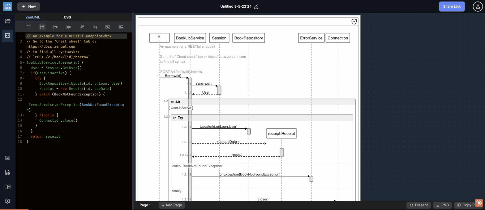

Test scenario: Present Mode, CSS Tab & Privacy Badge — export bar, CSS customization, focus trap failure · ZenUML Web Sequence · 2026-05-10
Clicking the CSS tab triggers the same generic "Welcome to ZenUML.com" login modal — identical to the modal that appears for PNG export, Share Link, and potentially other features. 4 separate features now use the exact same auth modal with zero context about why login is needed or what the user will gain by signing in.
Worse: keyboard focus was not trapped inside the login modal. Keyboard input typed while the modal was visible went into the underlying ZenUML editor, corrupting the diagram content. This is both a security-adjacient UX bug and an accessibility violation (WCAG 2.1 §2.1.2: No Keyboard Trap requires focus to stay in modal dialogs).

When the auth modal appears (triggered by CSS tab click), keyboard focus is not constrained to the modal. Typing while the modal is visible sends keystrokes to the CodeMirror editor behind it, corrupting diagram content. Closing the modal then reveals broken ZenUML code — with no indication the editor was modified. This is an accessibility violation (WCAG 2.1 §2.1.2) and a data-integrity bug.
focus-trap or the native dialog element which traps focus by default.The CSS tab sits next to the ZenUML tab in the editor header — appearing as an equal peer, always accessible. Clicking it silently triggers the generic "Welcome to ZenUML.com" auth modal. No lock icon, no disabled state, no tooltip, no pricing tier badge signals that CSS customization requires an account. Users who've been working for hours on a diagram have no forewarning that switching tabs will interrupt them.
The "Present" button in the bottom bar has aria-label="Toggle Fullscreen" and title="Toggle Fullscreen Presenting Mode" — but the button label says only "Present". There is no visual feedback when clicked: no loading state, no fullscreen transition animation, no confirmation. In automation testing the button appeared completely non-functional. In real use, fullscreen mode may activate but without any transition or indicator that a mode change occurred.
A shield-with-checkmark icon sits in the top-right corner of the diagram canvas. Hovering it reveals: "We (the vendor) do not have access to your data. The diagram is generated in this browser." This is a genuine trust signal — but it is entirely invisible unless users discover the icon and hover it. New users will never see this message. The privacy guarantee is the strongest selling point for enterprise use, yet it's buried in a hover tooltip on an unlabeled icon.
If a user accidentally deletes all content (or over-applies Undo and clears the editor), there is no "Reset to example" or "Insert starter template" option. The editor becomes a blank black area. The toolbar insert buttons require existing content structure to work correctly. New users who erase the example while experimenting are stuck with an empty canvas and no guidance.